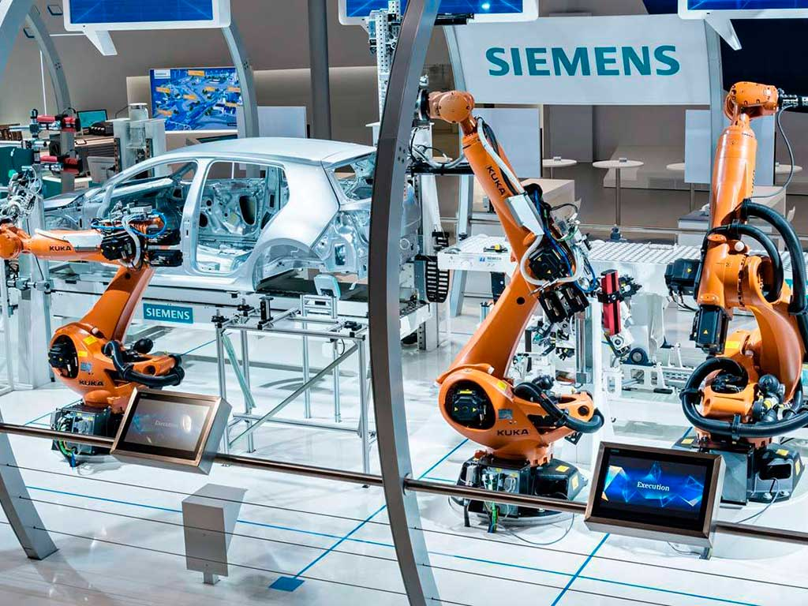
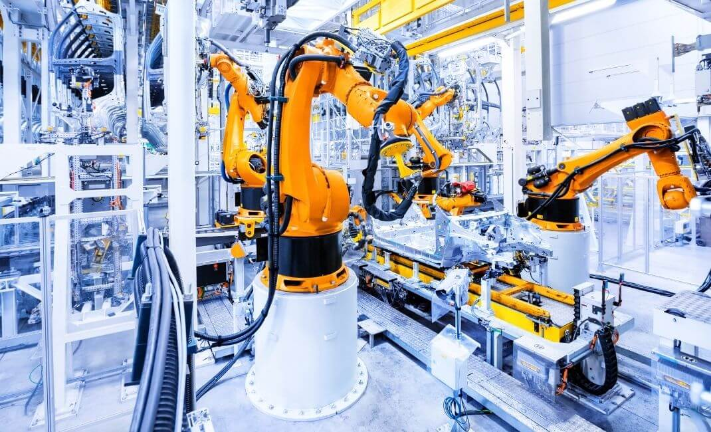
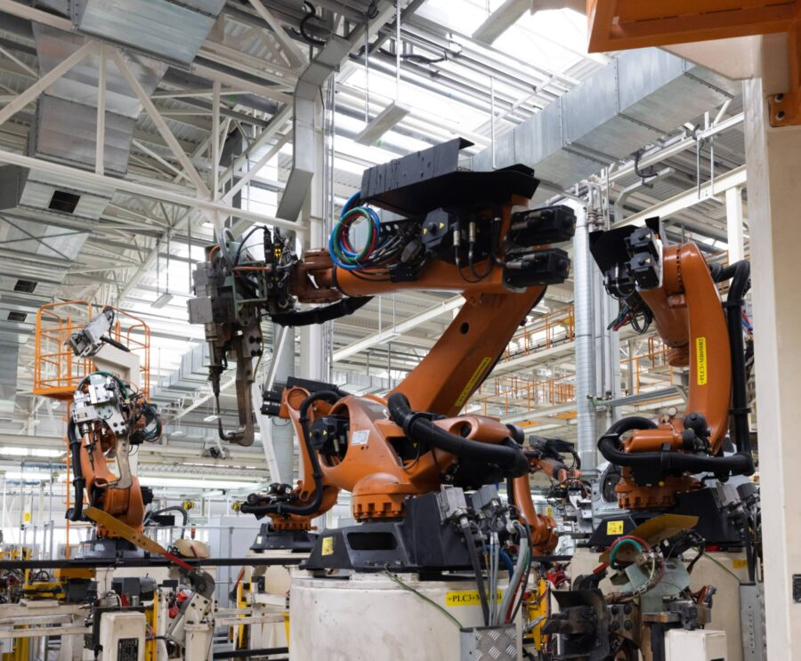

La inteligencia artificial está automatizando procesos industriales, desde robots en fábricas hasta vehículos autónomos. Si bien aumenta la eficiencia, también plantea preguntas sobre el futuro del trabajo y el desempleo tecnológico.



La inteligencia artificial (IA) en la automatización industrial está transformando la forma en que se fabrican productos, se gestionan operaciones y se toman decisiones en los entornos industriales. Al integrar tecnologías de IA con sistemas de automatización tradicionales, las industrias pueden mejorar la eficiencia, reducir costos y aumentar la flexibilidad en la producción. Aquí algunos de los principales aspectos de la IA aplicada a la automatización industrial: